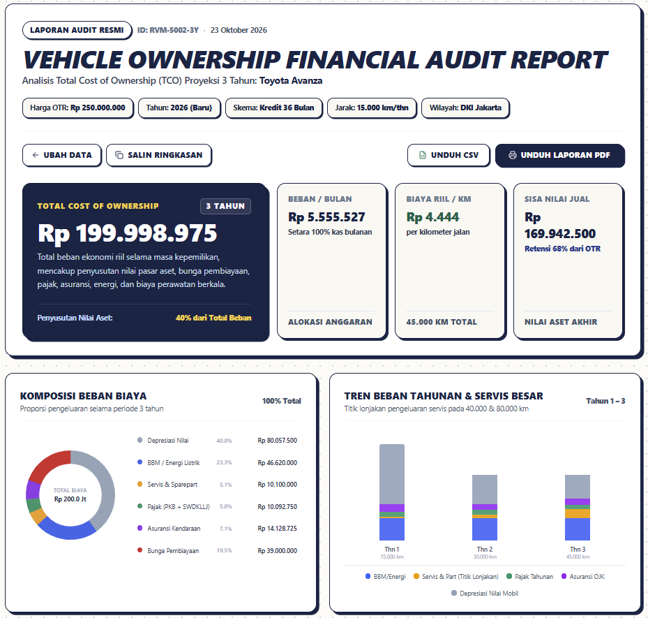

"Hampir mengambil Avanza 2016 yang harganya paling murah. Setelah menghitung TCO di Ravenmille, total biaya 3 tahunnya justru lebih tinggi karena jadwal peremajaan suspensi dan servis besar."
Kecerdasan Finansial & Inspeksi Otomotif Independen
Beyond the Price. Drive Smarter.
Hitung Total Cost of Ownership (TCO) kendaraan Anda secara menyeluruh, deteksi risiko tersembunyi mobil bekas sebelum membayar DP, dan bandingkan opsi pembelian berbasis data nyata.
PROYEKSI DEPRESIASI 1–5 TAHUN
PERHITUNGAN BIAYA RIIL PER KM
DETEKSI RISIKO TRANSMISI & RACK STEER
KOMPARASI HEAD-TO-HEAD OBJEKTIF
EKSPOR AUDIT LAPORAN PDF & CSV
DIREKTORI BENGKEL & INSPEKTOR INDEPENDEN
Kontrol Penuh Keputusan Otomotif Anda
Lima alat bantu saling terintegrasi untuk memastikan Anda tidak menanggung biaya perawatan atau depresiasi di luar rencana.
01. Kalkulator TCO Riil
Proyeksikan total pengeluaran kepemilikan mobil selama 1, 3, hingga 5 tahun: depresiasi aset, BBM, servis berkala, asuransi, dan pajak PKB.
Buka Kalkulator
02. Analisis Risiko Unit
Evaluasi skor kerentanan mobil bekas berdasarkan usia, odometer, transmisi, dan riwayat servis beserta checklist inspeksi lapangan.
Periksa Risiko Unit
03. Komparasi Head-to-Head
Bandingkan dua kandidat mobil secara berdampingan untuk mengetahui selisih pengeluaran bulanan dan efisiensi bahan bakarnya.
Mulai Komparasi
04. Katalog Masalah Khas
Pelajari penyakit umum mobil populer di Indonesia seperti rack steer, transmisi CVT, dan fuel pump lengkap dengan estimasi biaya perbaikannya.
Lihat Katalog Masalah
05. Direktori Bengkel Spesialis & Sewa Inspektor
Temukan bengkel spesialis terpercaya di kota Anda serta hubungi langsung inspektor independen via WhatsApp untuk memeriksa kondisi unit sebelum membeli.
Buka Direktori Bengkel & Inspektor
Transparansi Biaya Kepemilikan Kendaraan
Ravenmille membantu calon pembeli kendaraan di Indonesia—terutama pembeli mobil bekas—menilai total biaya kepemilikan dan risiko teknis secara objektif sebelum transaksi dilakukan.
Visi Ravenmille
Menjadi rujukan utama bagi calon pembeli kendaraan di Indonesia agar tidak ada lagi pemilik mobil yang terkejut oleh biaya perbaikan, pajak, maupun depresiasi tersembunyi.
Misi Ravenmille
- Edukasi calon pembeli mengenai pos pengeluaran dan risiko teknis kendaraan.
- Kalkulasi total biaya kepemilikan dalam satu laporan audit terstruktur.
- Identifikasi risiko spesifik unit berdasarkan usia, jarak tempuh, dan riwayat servis.
- Komparasi antar kandidat kendaraan berdasarkan biaya ekonomi riil.
Tiga Langkah Menuju Keputusan Pembelian yang Matang
1
Pilih Kendaraan
Pilih unit populer dari katalog Indonesia atau masukkan nama dan harga penawaran kendaraan pilihan Anda sendiri.
2
Analisis Biaya & Risiko
Evaluasi akumulasi pajak tahunan, premi asuransi, bahan bakar, servis rutin, depresiasi, serta skor kerentanan unit.
3
Putuskan dengan Yakin
Unduh laporan audit dalam format PDF atau CSV, lalu gunakan checklist lapangan atau jasa inspektor independen saat mengecek unit.
Susun Laporan Keuangan Kendaraan Anda
Dapatkan dokumen proyeksi tahun demi tahun yang merangkum beban biaya bulanan, biaya riil per kilometer, komposisi pengeluaran, serta estimasi nilai jual kembali.

120+
Pengguna Aktif Bulanan
"Checklist lapangannya sangat membantu. Saya jadi tahu poin spesifik yang harus ditanyakan soal riwayat oli CVT dan pengecekan kebocoran sebelum membayar DP ke showroom."
"Praktis karena semua komponen biaya dikumpulkan dalam satu laporan. Calon pembeli tidak perlu lagi membuka banyak situs berbeda hanya untuk memperkirakan pajak, depresiasi, dan servis."
Metodologi & Penggunaan Ravenmille
TCO adalah total biaya ekonomi riil selama memiliki kendaraan, meliputi penyusutan nilai jual kembali (depresiasi), bahan bakar, perawatan rutin, premi asuransi, bunga pembiayaan, serta pajak kendaraan bermotor (PKB).
Ya. Melalui halaman Bengkel & Inspektor, Anda dapat memfilter teknisi inspektor independen berdasarkan kota domisili lalu menghubungi mereka langsung melalui WhatsApp untuk menentukan jadwal pengecekan.
Tidak. Angka depresiasi di kalkulator menggunakan kurva simulasi standar (15% pada tahun ke-1, 32% pada tahun ke-3, dan 46% pada tahun ke-5) sebagai acuan perencanaan keuangan, bukan penawaran jual beli resmi.
Temukan Kendaraan Berikutnya dengan Tepat
Tuliskan kendaraan yang sedang Anda incar untuk mendapatkan jalur analisis TCO dan inspeksi yang paling sesuai.